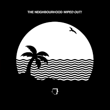

Artic Monkeys
Es una banda británica de rock, formada en Sheffield, Reino Unido.

Música que escucho hace años
Es una banda británica de rock, formada en Sheffield, Reino Unido.
Música que escucho hace años
es una banda de musica alternativa rock estadounidense creada en agosto de 2011.
Música que escucho hace unos meses
Es un cantante, compositor y productor discográfico canadiense.
Música que escucho hace años